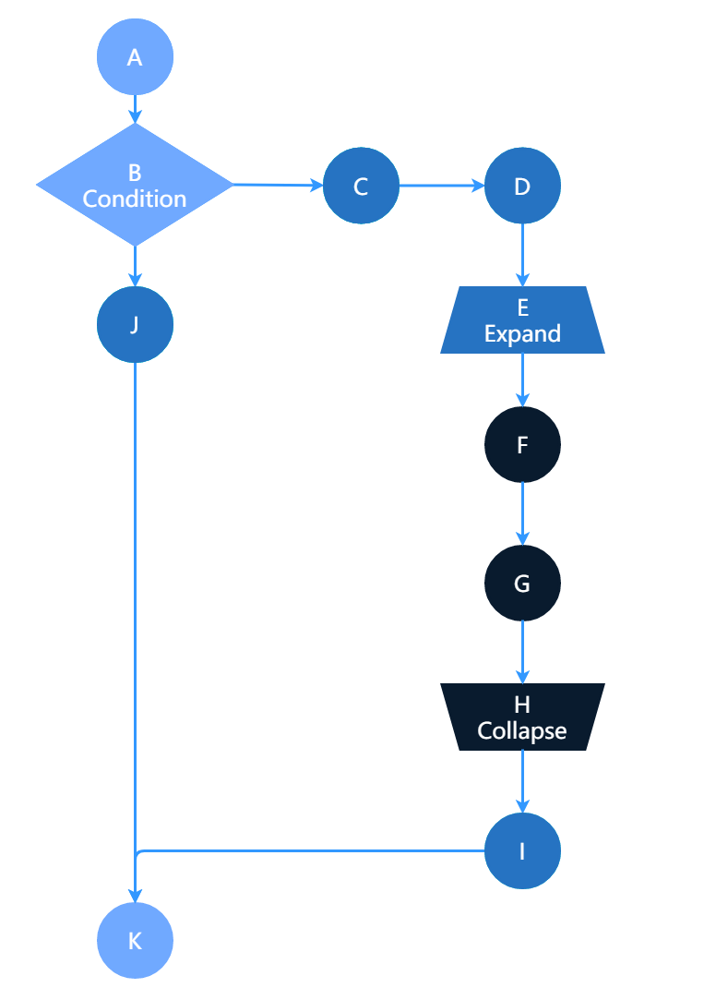

异常处理
应用运行时，可能会遇到如下载文件失败、解码异常等错误，这些错误可能导致数据流程无法进行下去，异常处理提供了接口和处理机制来帮助开发者处理这些错误，让应用继续正确执行。
异常工作机制
应用采用图编排模式时，数据是从前向后传递的，当前面的节点处理数据出现错误时，可能无法忽略，需要后续的节点感知，并处理。与编程语言类似，ModelBox设计了一套错误的抛出、传递、捕获的规则，使得错误可以由专门的节点统一处理。
首先应当明确的是，异常仅在一个session内部处理，多个session相互不影响。下文将按照异常的抛出、传递、捕获来讲解异常的机制和使用。
异常的抛出
当功能单元处理数据错误时，认为数据的错误无法恢复，需要后续的流程进行处理时，要将错误输出。错误输出的方式有如下两种：
对于单个Buffer输出错误时，调用Buffer::SetError接口，设置错误的详细信息，错误即可发出。
modelbox::Status Flowunit::Process(std::shared_ptr<modelbox::DataContext> data_ctx) { auto outputs = data_ctx->Output("out1"); outputs->Build({1}); auto buffer1 = outputs->At(0); buffer1->SetError("Custom.Downloader.NoSuchFile", "File xxxx is not exist"); return STATUS_OK; }对于多个Buffer同时设置错误时，调用BufferList::SetError接口，设置错误的详细信息，错误即可发出。
modelbox::Status Flowunit::Process(std::shared_ptr<modelbox::DataContext> data_ctx) { auto outputs = data_ctx->Output("out1"); outputs->Build({1, 1}); outputs->SetError("Custom.Crop.OutOfBound", "Crop area width xxx is great than image width xxx"); return STATUS_OK; }
异常的传递
对于带有错误的Buffer，后续的节点默认是会有框架进行透传处理，直到结束，开发者对错误的Buffer无感知。
异常的捕获
当需要对错误的Buffer进行感知时，就需要通过如下步骤才能对错误Buffer进行处理
明确的声明当前功能单元支持异常处理
cpp功能单元在实现中开启
MODELBOX_FLOWUNIT(ExampleFlowUnit, desc) { desc.SetExceptionVisible(true); }Python功能单元在功能单元配置文件中开启
exception_visible = true编排节点时，在节点配置上设置需要异常处理
get_exception[..., is_exception_visible=true]获取异常
cpp功能单元中获取
modelbox::Status Flowunit::Process(std::shared_ptr<modelbox::DataContext> data_ctx) { auto inputs = data_ctx->Input("in1"); for (auto buffer : inputs) { if (buffer->HasError()) { MBLOG_ERROR << "error is " << buffer->GetErrorCode() << ", " << buffer->GetErrorMsg(); } } }Python功能单元中获取
def process(self, data_ctx): inputs = data_ctx.input("in1") for input in inputs: if buffer.has_error(): print("error is " + buffer.get_error_code() + ", " + buffer.get_error_msg())
异常捕获中的可见性说明
之前数据流中提到，expand和condition会使得数据流的层级标记下降一次，这个层级不仅影响了匹配，也作用于异常的捕获。核心点是，高层级的错误，低层不可见；低层级的错误，高层可见。

上图中，异常可见情况如下：
- A抛出异常，可在B、K中捕获
- 若B向C抛出异常，可在C、D、E、I、K中捕获；若B向J抛出异常，可在J、K中捕获
- C抛出异常，可在D、E、I、K中捕获
- E抛出异常，可在F、G、H、I、K中捕获
- F抛出异常，可在G、H、I、K中捕获
- G抛出异常，可在H、I、K中捕获
- H抛出异常，可在I、K中捕获
- I抛出异常，可在K中捕获
- J抛出异常，可在K中捕获